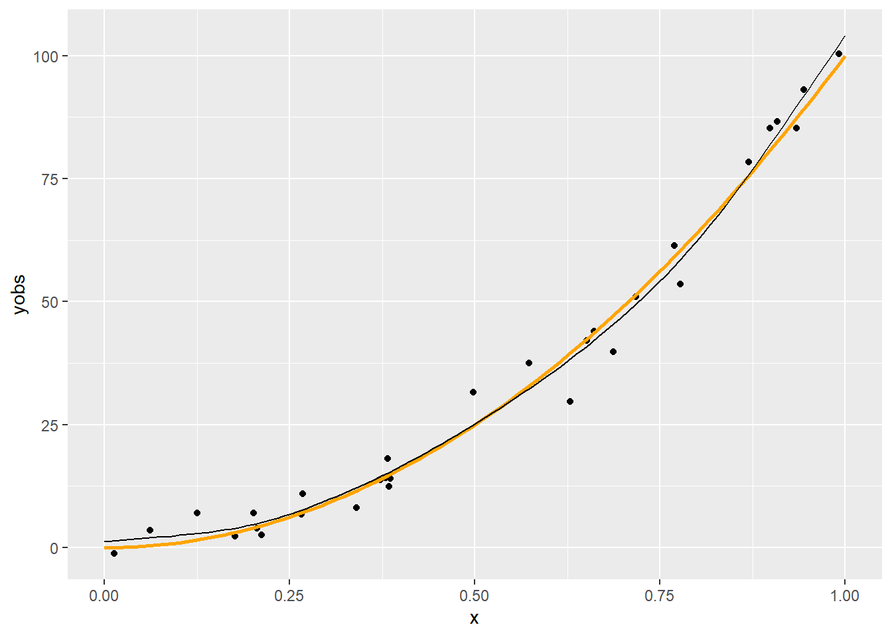
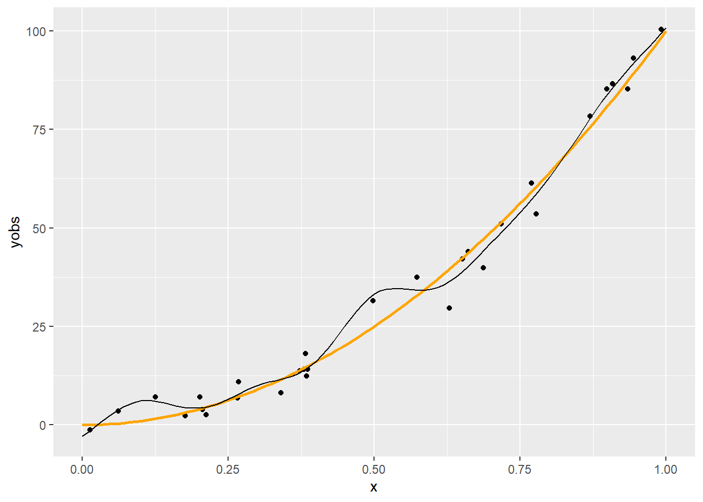
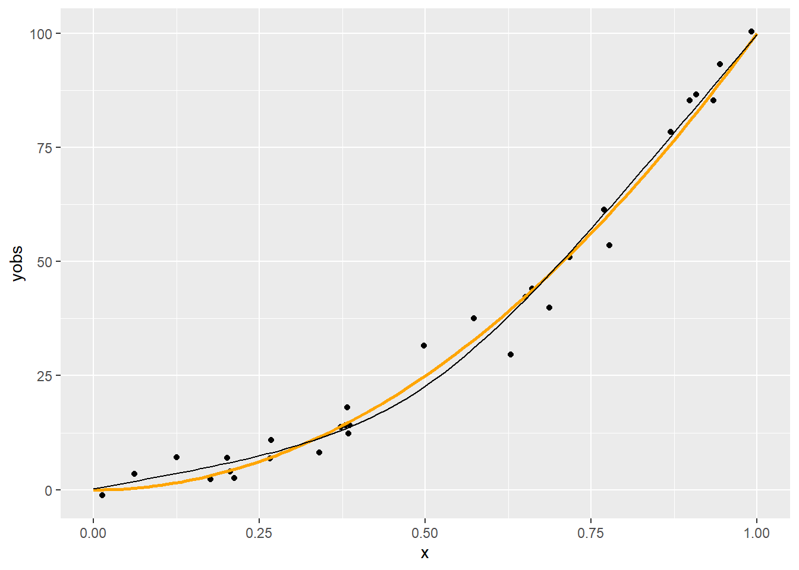
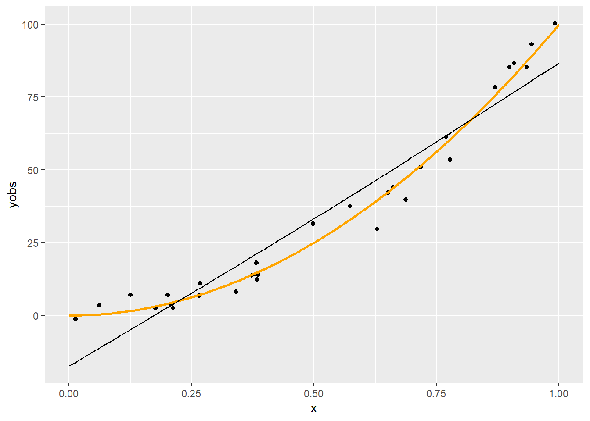
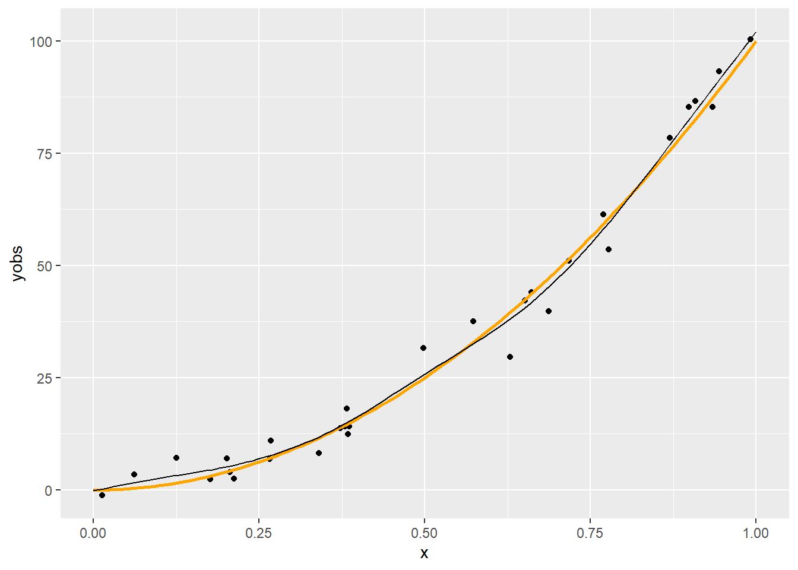
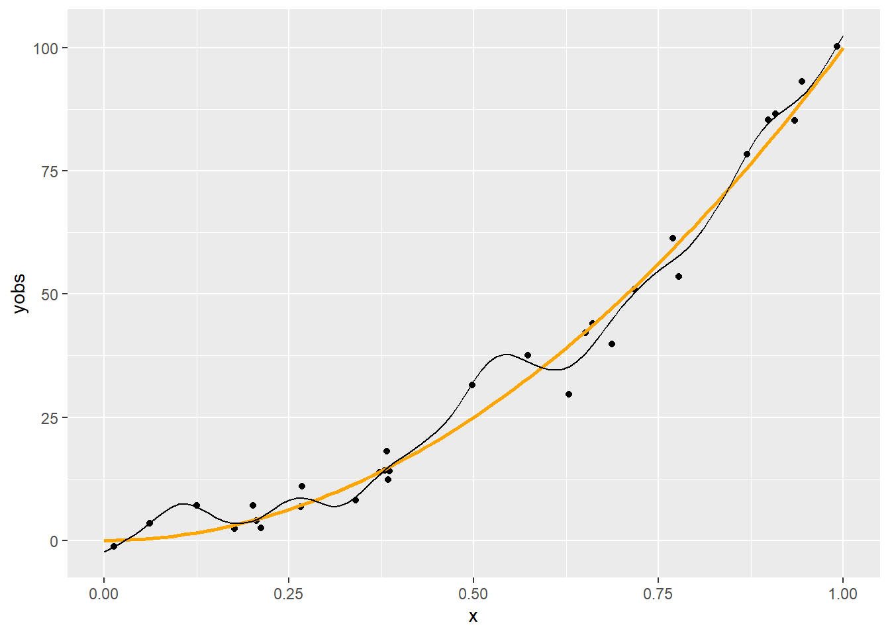

Amiről nem beszéltünk eddig: ez mind szép, de hogyan tudunk ténylegesen is megbecsülni egy ilyen spline-regressziót?
Ehhez visszalépünk pár lépést, és bevezetünk egy első kicsit absztraktnak tűnő, de később rendkívül jó szolgálatot tevő megközelítést
Bár a célunk a spline-regresszió becslésének a megoldása, de a dolog – értelemszerűen – alkalmazható polinomiális regresszióra is (legfeljebb nincs sok értelme, mert az hagyományos módszerekkel is jól kézbentartható), úgyhogy először azon fogjuk illusztrálni
3.1.2 Polinomok tere mint függvénytér
A másodfokú polinomok – mint függvények – összessége függvényteret alkot
Ez egy olyan vektortér, aminek az elemei a függvények, a skalárok a valós számok, a két művelet pedig
Vektorok (azaz függvények) összeadása: \(\left(f+g\right)\left(x\right)=f\left(x\right)+g\left(x\right)\), tehát pontonkénti összeadás
Belátható, hogy ez teljesíti a vektortéraxiómákat, mert zárt a két műveletre (másodfokú polinomok összege másodfokú polinom és másodfokú polinom konstansszorosa másodfokú polinom), illetve az összeadásra nézve kommutatív csoport, a szorzás és az összeadás mindkét irányból disztributív, van egységelem szorzásra nézve és a skalárszorzás valamint a valós számok szorzása kompatibilis
3.1.3 Polinomok terének bázisa
Szuper, de mindez mire jó?
Ha vektortér, akkor létezik bázisa, azaz olyan vektorok halmaza, melyekből lineáris kombinációval minden vektor – egyértelműen – előállítható (bázis: lineárisan független generátorrendszer)
A bázis nem feltétlenül egyértelmű, de az elemszáma igen, ez a vektortér dimenziója
Például a másodfokú polinomok jó bázisa \(\left\{1,x,x^2\right\}\), nyilvánvaló, hogy ebből tényleg minden \(ax^2+bx+c\) másodfokú polinom előállítható lineáris kombinációval (triviálisan, a súlyok \(c\), \(b\) és \(a\))
Függvényterek esetében a bázis elemeit bázisfüggvényeknek is szokás nevezni, az \(\left\{1,x,x^2\right\}\) tehát a másodfokú polinomok bázisfüggvényei
3.1.4 A polinomok terének dimenziója
Mivel mutattunk egy konkrét bázist, így a dimenzió nyilván 3, de a későbbiek szempontjából jól jön egy másik módszer is
Azzal, hogy az \(ax^2+bx+c\) polinomot megfeleltettük az \(\left(a,b,c\right)\) valós számhármasnak, a polinomok tere és a valós számhármasok tere (az \(\mathbb{R}^3\)) között létesítettünk egy izomorfizmust (a leképezés művelettartó és kölcsönösen egyértelmű)
Emiatt a polinomok terének ugyanaz a dimenziója, mint az \(\mathbb{R}^3\)-nak, ami viszont természetesen 3
Ez a módszer általában is használható: a dimenzió a felíráshoz szükséges paraméterek száma (feltéve, hogy ezek valós számok, valamint mindegyikhez tartozik egy polinom és viszont)
3.1.5 Spline-ok függvénytere
Mindez a spline-okra is igaz!
Érthető: minden pontban két polinomot adunk össze, vagy polinomot szorzunk skalárral, az eredmény polinom (már láttuk) – így tud spline adott pontja lenni!
Azaz: spline-okat is elő tudunk állítani bázisfüggvények lineáris kombinációjaként!
3.1.6 Hány dimenziós a spline-ok tere?
Mielőtt megkeressük a spline-ok terének egy bázisát (azaz a konkrét bázisfüggvényeket), tisztázni kellene, hogy hány bázisfüggvényt keresünk egyáltalán, azaz hány dimenziós a spline-ok függvénytere
Naiv ötlet (köbös spline-okat használva példaként): van \(q-1\) szakasz (\(q-2\) knot, ami meghatároz \(q-3\) szakaszt meg a két vége; úgy is felfogható, hogy a két végével együtt \(q\) knot van, ami meghatároz \(q-1\) szakaszt) és mindegyiken egy harmadfokú polinom (aminek 4 paramétere van), akkor az \(4q-4\) paraméter
Igen ám, de vannak megkötések: a knotokban a függvényérték és az első két derivált egyezik
Minden megkötés minden pontban 1 egyenlet, az 1-gyel csökkenti a paraméterek számát: van \(q-2\) knot és 3 megkötés, az \(3q-6\) csökkentés, marad \(q+2\) paraméter
De mivel természetes, így a végpontokban is van 1-1 megkötés: marad \(q\) paraméter, azaz \(q\) dimenziós a természetes köbös spline-ok tere (ezért neveztük a knot-ok számát \(q-2\)-nek!)
3.1.7 Mik a spline-ok bázisfüggvényei?
Természetesen itt is igaz, hogy adott, rögzített spline-osztályra (pl. természetes köbös) is végtelen sok bázis van
\(b_1\left(x\right)=1, b_2\left(x\right)=x, b_i\left(x\right)=R\left(x,x_{i-2}^{\ast}\right) (i=3,4,\ldots,q)\), ahol \(R\) egy nevezetes – elég hosszú, bár nem túl bonyolult – függvény (hamar látni fogjuk, hogy ez miért előnyös), annyi fontos, hogy \(x\) a \(\left[0,1\right]\) intervallumban essen (egyszerű átskálázással mindig elérhető)
Most már csak a regresszió kivitelezését kell kitalálnunk
3.2 Modellmátrix előállítása
3.2.1 A bázisfüggvények használatának ereje
A bázisfüggvények használatának két hatalmas előnye van:
A probléma visszavezethető velük a sima lineáris regresszióra
Sőt, ehhez a modellmátrix is könnyen előállítható
3.2.2 Bázisfüggvények használata másodfokú polinomnál
Legyen \(b_1\left(x\right)=1\), \(b_2\left(x\right)=x\) és \(b_3\left(x\right)=x^2\) a bázisunk
Ez úgy tűnik, hogy csak egy nagyon nyakatekert felírás egy amúgy egyszerű problémára
Valójában viszont egy elképesztően erőteljes dolgot nyertünk: minden olyan függvény, legyen bármilyen komplikált is, ami felírható bázisfüggvényekkel (azaz az osztálya függvényosztályt alkot), az berakható egy kutyaközönséges regresszióba (azaz lehet ő a regrssziós függvény) a fenti transzformációval, tehát
\[
\sum_{i=1}^q \beta_i b_i\left(x\right)
\]
alakban
(Azaz minden függvény, ami egy függvénytér eleme)
3.2.4 A bázisfüggvények ereje, 1. felvonás
Még egyszer: minden függvény, ami felírható bázisfüggvényekkel
Azaz: minden
…és az összesnek pontosan ugyanúgy az lesz az alakja, hogy
\[
\sum_{i=1}^q \beta_i b_i\left(x\right),
\]
egyedül a bázisfüggvényt kell az adott esetnek megfelelően megválasztani
Tehát a spline is mehet ugyanígy (csak megfelelő \(b_i\)-kkel)!
És ha ez az alak megvan, akkor onnantól természetesen sima lineáris regresszióval elintézhető
3.2.5 A bázisfüggvények ereje, 2. felvonás
Ráadásul az \(\mathbf{X}\) modellmátrix (design mátrix) előállítása is nagyon könnyű lesz: az \(i\)-edik sora
Így maga a mátrix az \(\mathbf{x}\) és az \(\left[1,2,\ldots,q\right]\) vektor külső szorzata (tenzorszorzata), ha a művelet alatt az oszlopban szereplő érték által meghatározott bázisfüggvény sorbeli elemre történő alkalmazását értjük, tehát \(i\otimes j:=b_j\left(x_i\right)\), és így
Folytassuk az előző fejezet példáját, csak az egyszerűség kedvéért a \(\left[0,1\right]\) intervallumon lévő \(x\)-szel (ha nem is így lenne, ez átskálázással mindig elérhető):
A csomópontokat egyenletesen vesszük fel, számuk \(q-2\):
xk <-1:4/5q <-length(xk) +2
A bázisfüggvényeknél említett \(R\) függvény:
rk <-function( x, z ) { ((z-0.5)^2-1/12)*((x-0.5)^2-1/12)/4-((abs(x-z)-0.5)^4-(abs(x-z)-0.5)^2/2+7/240)/24}
A modellmátrixot csupa 1-gyel inicializáljuk, így az első oszlop rendben is lesz:
X <-matrix(1, n, q)
Beállítjuk a második oszlopot is:
X[, 2] <- x
És most jön a trükk: az outer tetszőleges függvénnyel tud „külső szorzatot” képezni:
X[, 3:q] <-outer(x, xk, FUN = rk)
Mindezeket a késsőbbiekre tekintettel egy függvénybe is összefoghatjuk:
spl.X <-function(x, xk) { q <-length(xk) +2 n <-length(x) X <-matrix(1, n, q) X[, 2] <- x X[, 3:q] <-outer(x, xk, FUN = rk) X}
Ezzel a modellmátrixszal végrehajthatjuk a regressziót (ne felejtsük, tengelymetszetre nincs szükség, pontosabban külön tengelymetszre nincs, hiszen az már benne van az így összerakott X-ben):
fit <-lm(yobs ~ X -1 )
Az eredmény szemléltetéséhez az xgrid pontjait is kifejtjük a spline-nal:
Xp <-spl.X(xgrid, xk)yp <- Xp%*%coef(fit)p +geom_line(data =data.frame(xgrid, yp), aes(x = xgrid, y = yp))

Még egy kicsit automatizáljunk:
predspline <-function(x, y, q) { xk <- (1:(q-2))/(q-1) X <-spl.X(x, xk) fit <-lm(y ~ X -1) xp <-0:100/100 Xp <-spl.X(xp, xk) yp <- Xp%*%coef(fit)list(fit = fit, xp = xp, yp = yp)}
Így például könnyen megnézhetjük az eredményt különböző \(q\)-kkal:
p +geom_line(data =with(predspline(x, yobs, 6), data.frame(xp, yp)),aes(x = xp, y = yp))
p +geom_line(data =with(predspline(x, yobs, 11), data.frame(xp, yp)),aes(x = xp, y = yp))

p +geom_line(data =with(predspline(x, yobs, 3), data.frame(xp, yp)),aes(x = xp, y = yp))

Látszik, hogy a \(q=6\) nagyjából megfelelő, a 11 kicsit sok, a 3 pedig egy leheletnyit mintha kevés lenne. (Most persze könnyű dolgunk van, hiszen tudjuk mi az igazság!) Erre a kérdésre nemsokára visszatérünk.
3.3 Penalizálás
3.3.1 Dimenzió meghatározása
A \(q\) dimenzió tehát az illeszkedés szabadságát határozza meg
Valahogy ezt is meg kellene határozni
Jön a fő kérdéskör: a túlilleszkedés elleni védekezés
Milyen legyen a „simítás foka”?
3.3.2 Simítás fokának meghatározása
Tehát \(q\)-t kellene valahogy jól belőni
Egyszerű modellszelekció?
Vagy nem beágyazott modellek szelekciója, vagy nem ekvidisztáns knot-ok, egyik sem túl szerencsés
Alternatív ötlet: \(q\) legyen inkább rögzített (elég nagy értéken, kicsit a várható fölé lőve), de a függvényformát nem engedjük teljesen szabadon alakulni
Hogyan? Büntetjük a túl „zizegős” függvényt!
Ez épp a penalizált regresszió alapötlete
És ami rendkívül fontos: így már jellemzően sem \(q\) pontos megválasztása, sem a knot-ok pontos helye nem bír nagy jelentőséggel (választhatjuk például egyenletesen)!
3.3.3 Penalizált regresszió
Klasszikus megoldás: a második derivált jelzi adott pontban a „zizegősséget”, ezt kiintegrálva kapunk egy összesített mértéket az egész függvényre
Valamilyen súllyal ezt vegyük figyelembe:
\[
\left\|\mathbf{y}-\mathbf{X}\boldsymbol{\beta}\right\|^2+\lambda\int_0^1 \left[f''\left(x\right)\right]^2 \mathop{}\!{\mathrm{d}} x
\]
A \(\lambda\) a simítási paraméter, ez határozza meg a trade-off-ot a jó illeszkedés és a simaság között
\(\lambda=0\): penalizálatlan becslés, \(\lambda\rightarrow\infty\): egyenes regressziós függvény
3.3.4 A simasági büntetőtag meghatározása
A regressziós függvény alakja: \(f\left(x\right)=\sum_{i=1}^q \beta_i b_i\left(x\right)\)
Kétszer deriválva: \(f''\left(x\right)=\sum_{i=1}^q \beta_i b_i''\left(x\right)\)
De hát ez épp egy kvadratikus alak! (\(\sum_{i=1}^q \sum_{j=1}^q x_i a_{ij} x_j= \mathbf{x}^T \mathbf{A} \mathbf{x}\))
Legyen \(S_{ij}=\int_0^1 b_i''\left(x\right) b_j''\left(x\right) \mathop{}\!{\mathrm{d}} x\) és \(\mathbf{S}\) az ezekből alkotott mátrix, akkor tehát a simítási büntetőtag:
Az előbb definiált \(R\)-rel \(\mathbf{S}\) alakja nagyon egyszerű lesz: \(S_{i+2,j+2}=R\left(x_i^{\ast},x_j^{\ast}\right)\), az első két oszlop és sor pedig csupa nulla
3.3.5 Megvalósítás R alatt
Az xk szokásosan a knot-ok helye; a mátrixot pedig csupa nullával inicializáljuk, hogy az első két oszlop és sor egyből jó is legyen és csak a többit kelljen kitölteni:
spl.S <-function(xk) { q <-length(xk) +2 S <-matrix(0, q, q) S[3:q, 3:q] <-outer(xk, xk, FUN = rk) S}
3.3.6 A simítási büntetőtag beépítése a regressziós célfüggvénybe
Kényelmes lenne, ha \(\left\|\mathbf{y}-\mathbf{X}\boldsymbol{\beta}\right\|^2+\lambda \boldsymbol{\beta}^T\mathbf{S}\boldsymbol{\beta}\) helyett írhatnánk egyetlen normát célfüggvényként
Ez nem nehéz, ha a második tagot át tudjuk normává alakítani, hiszen (innentől némi blokkmátrix műveletekre szükség lesz)
Legyen \(\mathbf{B}\) olyan, hogy \(\mathbf{B}^T\mathbf{B}=\mathbf{S}\) (pl. spektrális dekompozícióval, vagy Cholesky-dekompozícióval megtalálható a mátrix ilyen „négyzetgyöke”), ekkor
Innentől a regresszió játszi könnyedséggel (értsd: a szokványos, nem is penalizált eszköztárral) megoldható, csak \(\mathbf{X}\) szerepét \(\begin{pmatrix}\mathbf{X} \\ \sqrt{\lambda} \mathbf{B} \end{pmatrix}\), \(\mathbf{y}\) szerepét \(\begin{pmatrix} \mathbf{y} \\ \mathbf{0} \end{pmatrix}\) játssza
Így az „\(\mathbf{X}^T\mathbf{X}\)” épp \(\mathbf{X}^T\mathbf{X}+\lambda \mathbf{B}^T\mathbf{B}=\mathbf{X}^T\mathbf{X}+\lambda\mathbf{S}\) lesz
Az „\(\mathbf{X}^T\mathbf{y}\)” pedig \(\mathbf{X}^T\mathbf{y}\) (a kiegészített eredményváltozóban lévő nullák épp a magyarázó változók kiegészítését ütik ki)
(Persze a gyakorlatban ennek közvetlen számítása helyett célszerűbb az augmentált eredmény- és magyarázóváltozókat berakni egy hatékonyabb lineáris regressziót megoldó módszerbe)
3.3.8 Megvalósítás R alatt
Mátrix „gyökének” a számítása (spektrális felbontással):
mat.sqrt <-function(S) { d <-eigen(S, symmetric =TRUE) d$vectors%*%diag(d$values^0.5)%*%t(d$vectors)}
Ahogy volt róla, penalizálás mellett a \(q\) pontos értéke nem túl fontos, csak ne legyen túl kicsi, ezért használjunk most \(q=20\)-at.
A penalizált becslés az augmentált modellmátrix használatával (kihasználjuk, hogy ha nem létező elemre hivatkozunk, az R automatikusan kiegészíti a vektort):
predsplinepen <-function(x, y, q, lambda) { xk <- (1:(q-2))/(q-1) Xa <-rbind(spl.X(x, xk), sqrt(lambda) *mat.sqrt(spl.S(xk))) ya <-c(y, rep(0, q)) fit <-lm(ya ~ Xa -1) xp <-0:100/100 Xp <-spl.X(xp, xk) yp <- Xp%*%coef(fit)list(fit = fit, xp = xp, yp = yp)}
Ezzel könnyen meghatározhatjuk az eredményt különböző \(\lambda\)-kra:
p +geom_line(data =with(predsplinepen(x, yobs, 20, 1), data.frame(xp, yp)),aes(x = xp, y = yp))

p +geom_line(data =with(predsplinepen(x, yobs, 20, 0.001), data.frame(xp, yp)),aes(x = xp, y = yp))

p +geom_line(data =with(predsplinepen(x, yobs, 20, 0.000001), data.frame(xp, yp)),aes(x = xp, y = yp))

Látható, hogy a \(\lambda=1\) túl nagy, a \(0,\!001\) jónak tűnik, a \(0,\!000001\) túl kicsi.
3.4 Simítási paraméter meghatározása
3.4.1 A simítási paraméter meghatározása
Kérdés még a \(\lambda\) értéke
Sima OLS-jellegű eljárással, tehát a reziduális négyzetösszeg minimalizálást tűzve ki célul nyilván nem határozható meg (hiszen az mindig 0-t adna)
Épp az a lényeg, hogy a túlilleszkedésre is tekintettel legyünk
Ötlet: keresztvalidáció
3.4.2 Keresztvalidációs módszerek: OCV
Mindig egy pontot hagyunk ki, és így számolunk hibát: OCV
(Szokták egy-kihagyásos keresztvalidációnak, LOOCV-nek is nevezni)